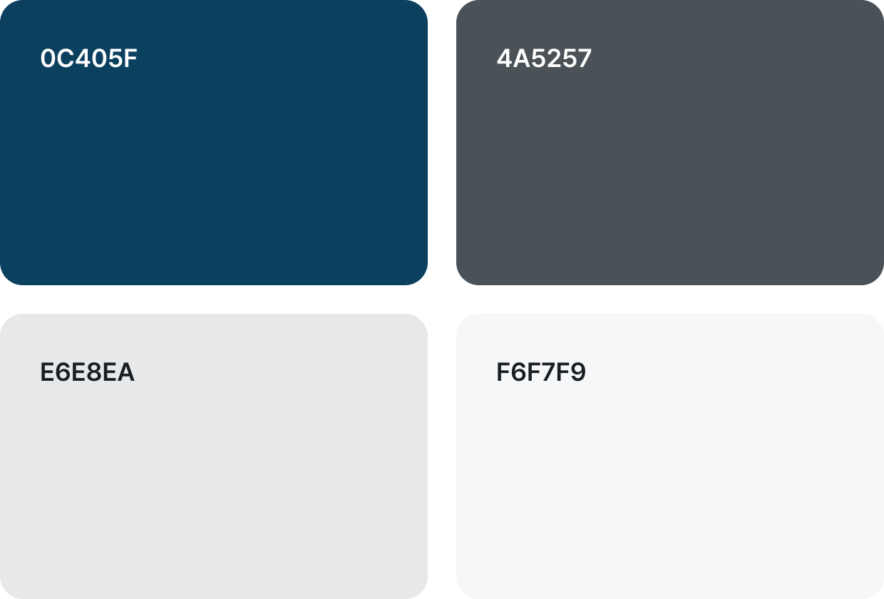

PROJECT GOAL
‘한경MIS’는 기업 재무정보 및 시장 데이터를 효율적으로 조회하고 분석할 수 있는 웹 기반 경영정보 시스템입니다.
기존 시스템의 구조는 유지하되, 사용자 혼란을 줄이기 위해 UI를 개선하고 불필요한 요소를 제거하여
핵심 기능 중심으로 정리했습니다. UX 개선은 개인화와 정보 접근성 향상에 중점을 두었으며,
퀵메뉴, 검색 영역 등 재구성해 보다 쉽고 빠르게 정보에 접근할 수 있도록 했습니다. 또한, 사용자의 연령대와
성향을 분석해, 적절한 시점과 위치에 콘텐츠를 배치함으로써 자연스럽고 직관적인 UX 흐름을 설계했습니다.
DESIGN CONCEPT

MIS 사용자가 쉽게 이해할 수 있도록, 단순하고 직관적인 플랫 디자인을 기반으로 기능과 요소를
조화롭게 구성했습니다.
DESIGN ELEMENTS

메인 컬러로 딥네이비를 사용하여 브랜드의 신뢰감을 유지하고, 정보의 위계성을 강조하기 위해
그레이스케일 톤을 활용했습니다. Pretendard 폰트를 기반으로 깔끔하고 현대적인 사용자 경험을 제공합니다.